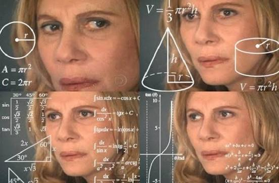

Muitas vezes pensar de maneira diferente pode levar a soluções inesperadas.

Qual o número que triplicado, depois aumentado em 75%, o resultado dividido por sete, o quociente reduzido de seu terço, o resultado multiplicado por ele mesmo, esse número quadrado menos 52, a raiz quadrada da diferença encontrada somada a oito e a soma dividida por dez, resulta no número 2?